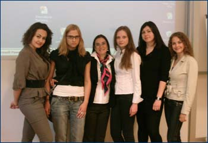
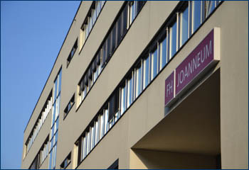
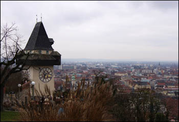

|
 Грац не зря является студенческим городом. Здесь много учебных заведений и соответственно студентов из самых разных стран, а это прекрасная возможность познакомиться с культурой и языком не только Австрии, но и большинства европейских стран, а также США, Мексики, Австралии. Было безумно интересно участвовать в совместных студенческих проектах, экскурсиях и праздниках. Грац не зря является студенческим городом. Здесь много учебных заведений и соответственно студентов из самых разных стран, а это прекрасная возможность познакомиться с культурой и языком не только Австрии, но и большинства европейских стран, а также США, Мексики, Австралии. Было безумно интересно участвовать в совместных студенческих проектах, экскурсиях и праздниках.
Программа дает возможность получить знания из самых разных областей: International Marketing, Strategic Management, Business Computing, Supply Chain Management, International Finance, HRM, Cross-cultural course. Аудитории и библиотека замечательно оснащены, что заметно ускоряет процесс обучения. Хотя все занятия проводятся на английском языке (прекрасная возможность для его совершенствования!), немецкий язык вам тут точно не дадут забыть. При университете есть курсы по всем аспектам немецкого языка!
Я очень благодарна факультету за незабываемый семестр в прекрасной Австрии!
Ольга Астапова, студентка ФМО
Обучение в Австрии в качестве ERASMUS дало мне ни с чем несравнимый опыт. И даже не просто потому, что мы находились в многокультурной среде. Все знают о ценности такого поликультурного образования. Каждая страна уникальна, со своим менталитетом и традициями, и такое погружение в среду дает поистине неоценимый опыт общения с будущими иностранными коллегами по профессии, огромный потенциал для развития способности владения сразу немецким и английским языками.
Очень запомнилась встреча с местным мэром (или бургомистром согласно германской правовой традиции) Зигфридом Наглом, который рассказал о важности практики международного обмена студентами и значимости того шанса, который выпал нам благодаря программе ERASMUS. Нас поразил тот факт, что после встречи он добирался домой на трамвае - русским чиновникам такое поведение пока не свойственно. Я не хочу кого-то осуждать или восхвалять, судить не мне. Я просто считаю, что мне очень повезло понаблюдать за особенностями менталитета и модели поведения европейцев.
Безусловно, теперь, после данного обучения, я с полным правом могу говорить о том, что получила специальность «мирового экономиста».
Елена Бородецкая, студентка ФМО
Мы проходили обучение в университете прикладных наук ФХ Йоаннеум в городе Граце, Австрия. Среди занятий были представлены Global Business Program на английском языке и разнообразные курсы немецкого языка. Лучше понять и почувствовать культуру страны помогло занятие «Культура Австрии», на котором мы рассматривали историю страны, речевой этикет, даже особенности кофейных церемоний! Закреплялись полученные теоретические знания на практике: в общении с австрийцами и походе в знаменитое кафе «Захер», где мы, уже разобравшись с различимыми видами кофе, наслаждались превосходным напитком и вкусным десертом. Стоит отметить и занятия по чтению, в ходе которого я прочитала произведение своего любимого автора Э.М. Ремарка «На Западном фронте без перемен» в оригинале! Занятия по устной речи, проходившие в форме шутливых диалогов, помогали в процессе общения с австрийскими друзьями. И конечно, самое сложное, но необходимое занятие по грамматике дало шанс удивить этих друзей правильно выстроенными предложениями и великолепной лексикой.
Четыре месяца, проведенные в Граце, запомнятся мне навсегда. Не упускайте возможность отправиться на обучение в Австрию и открыть для себя новые знания, новые навыки, новых друзей, новые города и страны!
Анастасия Кузнецова, студентка ФМО
Я благодарна факультету МО за предоставленную уникальную возможность обучения в Австрии в г. Грац. Это дало мне возможность выучить новый язык – немецкий, подтянуть английский, поскольку всё обучение велось на нём, а также улучшить французский. С нами обучались студенты из 35 стран, и можно было разговаривать и познавать не только их языки, но и культуры: национальные кухни, обычаи, традиции. Учебный процесс в университете проходил совсем иным образом, нежели в России. Мы сами выбирали предметы, которые хотели бы посещать. Главное отличие европейского образования в том, что основной упор делается на практический материал и на самостоятельную работу студентов. Мы, как правило, работали интернациональными группами по 5–7 человек: делали презентации, защищали собственные проекты, готовились к экзаменам, которые, кстати, всегда были в виде теста. Мне понравилось отношение преподавателей к студентам. Все они были очень открытыми для нас: всегда можно было подойти, задать вопрос, попросить что-то объяснить. Мы чувствовали их заинтересованность в наших знаниях, и это подталкивало нас учиться хорошо и сдавать экзамены на отличные баллы.
Я точно знаю, что поездка дала мне большое развитие и личностный рост. Ведь не зря говорят, что один день проведенный в чужих краях, даёт больше, чем несколько лет жизни дома.
Татьяна Петренко, студентка ФМО
Учеба за границей – это не просто получение языковых знаний, но еще и возможность невероятно расширить кругозор. Среди основных преимуществ учебы в Австрии для меня: изучение иностранного языка (немецкого языка) в среде носителей языка, а также улучшение уровня знания английского языка, так как основное обучение проходит на английском языке, тесное знакомство с культурой страны и ее традициями, умение находить общий язык с «чужим» народом, разностороннее развитие личности.
Первая неделя пребывания в Австрии началась с ориентационной программы. Работа международного отдела данного университета осуществляется на высоком уровне, они не только помогли заполнить все документы, связанные с оформлением иностранного студента за границей, но и помогли освоиться в многокультурной среде. Проводили мероприятия, на которых проходило знакомство со студентами по обмену из других стран. А студентов, обучающихся на данной программе, было не много не мало, а 130 человек из 32 стран. Также в рамках ориентационной программы для нас провели обзорную экскурсию по Грацу, в котором нам предстояло жить 5 месяце, экскурсия на шоколадную фабрику «Zotter». Все проводимые мероприятия помогли быстрее освоиться в данной среде.
Юлия Шишкина, студентка ФМО
Зимний семестр 2011/2012 я провела в университете прикладных наук FH Joanneum, в городе Грац, Австрия.
За это время я смогла хорошо ознакомиться с бытом и культурой не только Австрии, но и многих других уголков мира. Общаясь со студентами из разных стран, я смогла узнать много нового не только о культурах – национальных кухнях, обычаях, традициях, но и смогла улучшить свои знания как немецкого, так и испанского языков. Более того, благодаря тому, что обучение в Университете велось на английском языке, я смогла повысить уровень владения английским языком.
Обучение в Университете проходит по совсем иному, непривычному для нас плану. Студенты сами выбирают дисциплины, которые они бы хотели посетить, что делает занятия более оживленными и интересными, ведь все студенты сами желают больше узнать о предмете! Мне, как и остальным студентам, пришлось сделать свой выбор. В этом семестре я изучала Экономику Европейского Союза, где узнала много нового и смогла услышать мнения самих европейцев о ситуации в Союзе, также я изучала основы межкультурных коммуникаций и менеджмента, что помогло понять особенности ведения дел в разных странах и принципы общения между различными культурами, а на курсе Управления и Лидерства смогла узнать много нового о том, как отличается поведение руководителей и менеджеров в различных странах и культурах, что помогло легче усвоить курс Ведения переговоров, где мы смогли рассмотреть различные техники ведения переговоров, которые были очень полезны при разборе некоторых тем курса Маркетинг и менеджмент в сфере бизнес для бизнеса.
Кроме того, я посещала курсы по изучению немецкого языка и культуры и приняла участие в замечательной «Тандем-программе», целью которой была помощь в изучении языков, русского и немецкого, где моим тандем-партнером стал участник обмена между ВГУ и FH Joanneum, который в скором времени приедет в Воронеж.
Более того, благодаря этой программе обмена, я смогла открыть для себя настоящую Европу – такую, какая она есть, со всеми её особенностями и диковинками, с её настоящими людьми и традициями. Ведь кто бы мог подумать, что для австрийца выйти в национальной одежде в супермаркет так же просто, как нам надеть шапку зимой? Да и далекие от туристической шумихи города невероятно прекрасны в своем нетронутом виде, свободные от сувенирных лавок, заполненные цветами и зеленью. Как и студенты, разговоры с которыми на различные горячие темы последних месяцев смогли показать мне, насколько мнение обычных студентов-жителей ЕС может отличаться от того, что мы слышим и думаем о них.
Эта поездка – замечательный, ни с чем не сравнимый шанс увидеть что-то новое, узнать свои силы и, наконец, понять, что работа в сфере международных отношений – это путь поиска компромиссов и постоянного самосовершенствования. Я очень благодарна нашему факультету за то, что он предоставил такую замечательную возможность обучения в FH Joanneum!
Елена Власова, студентка ФМО
Семестр, проведенный в Граце, – необычный и очень интересный период моей жизни. В течение 5 месяцев учебы в этом сказочном австрийском городе я не только смогла улучшить уровень английского языка, но и встретить новых людей и приобрести настоящих друзей. Однако не стоит забывать, что основная цель поездки – это учебный процесс, который, благодаря университету FH Joanneum, оказался весьма полезным и развивающим. Но обо всем по порядку.
FH Joanneum – это относительно молодой (набор студентов проводится с 2001 года) университет прикладных наук, расположенный во втором по величине городе Австрии Граце. В университете существует множество учебных направлений, среди которых и Global Business Program (GBP), ставшее для меня родным за весь период обучения.

Особенностью данной программы является тот факт, что она специально создана для обменных студентов, поэтому и весь материал, и учебная нагрузка адаптированы к различному языковому уровню и уровню знаний и навыков, что позволяет намного быстрее привыкнуть к еще незнакомой системе обучения. Более того, чтобы помочь студентам приспособиться к изменившейся среде, первая неделя пребывания в Австрии началась с ориентационной программы, в процессе которой мы познакомились со студентами по обмену из других стран и освоились в многокультурной среде. Работа международного отдела университета осуществляется на наивысшем уровне: они помогли не только на начальном этапе, заполнив все документы, связанные с оформлением иностранного студента за границей, но также поддерживали нас в течение всего периода обучения.
GBP является модульной программой, где каждый студент может выбрать любые понравившиеся курсы, которые длятся или одну, или две недели в зависимости от выбранного курса. В весеннем семестре 2011/2012 я изучала такие дисциплины, как International Finance, International Services Management and Marketing, Strategic Management, Global Corporate Communication и многое другое.
Стоит отметить, что учеба в FH предполагает очень большой процент самостоятельного изучения материала. Лекции, в основном, служат закреплением изученного материала, поэтому к ним необходима домашняя подготовка. Обычно почти на каждой лекции рассматривается несколько практических кейсов, которые студенты разбирают вместе с преподавателем. Также большое внимание уделяется тому, чтобы студенты обрели навыки командной работы, так необходимые современному менеджеру, поэтому в курсах много работ в группах и командах.
Обучение в рамках программы GBP осуществляется на английском языке. Но официальный язык в Австрии – немецкий, поэтому университет предлагает курсы немецкого языка, а также дисциплину Austrian People and Culture, на которой мы рассматривали историю страны, речевой этикет, особенности национальных праздников и традиций.
К сожалению, мое пребывание в Австрии уже закончено, и я пишу отчет уже в своем родном городе… Однако 5 месяцев, проведенные в этой небольшой, поистине удивительной стране, навсегда останутся в моей памяти как самый волшебный опыт в моей студенческой жизни. И это неудивительно, ведь за такой сравнительно короткий отрезок времени мне удалось и улучшить английский язык, и узнать что-то новое, попутешествовать по европейским странам, проникнуться духом настоящей Европы, повстречать новых друзей со всех уголков земли.
Я чрезвычайно благодарна нашему факультету Международных отношений за то, что он предоставил эту возможность обучения в FH Joanneum!
Виктория Рыкова, студентка ФМО
Приняв участие в программе международного обмена, я провела зимний семестр 2012/2013 в университете прикладных наук FH Joanneum в австрийском городе Грац. И я ни секунды об этом не пожалела! Но обо всем по порядку.
Приехав в Австрию, я тут же почувствовала всю доброжелательность и гостеприимство её жителей. Всегда улыбчивые австрийцы готовы были помочь и откликнуться на любую просьбу, что сразу помогло освоиться на новом месте и почувствовать себя как дома. Семестр начался с ориентационной программы, которая ставила собой цель познакомить иностранных студентов с жизнью в Австрии и помочь нам влиться в студенческую жизнь. Мы ездили на различные экскурсии по окрестностям Граца и земле Штирия, центром которого он является. Это дало нам шанс не только сложить наше первое впечатление об Австрии, но и получить массу впечатлений от таких мест, как, например, шоколадная фабрика Zotter.
Программой моего обучения была программа глобального бизнеса (Global Business Program). Она ориентирована на студентов-иностранцев и проводится на английском языке, при этом большинство преподавателей тоже является иностранцами, что делает процесс обучения еще более увлекательным. Он проходит в интерактивной форме, все делятся особенностями той или иной сферы в своей стране и пытаются найти подходы к каждой из них. Среди прослушанных мною дисциплин были такие как экономика Евросоюза, международное бизнес право, международные переговоры, международный менеджмент и многие другие. Я не только подчерпнула огромное количество знаний в этих областях, но и приобрела опыт работы в команде, так как большинство проектов выполнялось в мини-группах, тем самым подталкивая нас к более тесному общению вне стен университета.
Помимо основных занятий, я также посещала курсы немецкого языка. Они очень сильно помогли мне в повседневной жизни, так как, узнавая что-то новое, я могла тут же использовать это на практике и улучшать свои знания. Также в университете существует тандем-программа, которая была создана для изучения языка и культуры. В ней принимают участие австрийские и иностранные студенты и на протяжении семестра помогают друг другу в изучении своих языков, рассказывают об особенностях повседневной жизни. В ней приняла участие и я. У меня была не только возможность узнавать что-то большее о немецком языке в неформальной обстановке, но и узнать студенческую жизнь австрийцев изнутри, проводить с ними время, найти новых знакомых.
Занятия в университете построены таким образом, что у студентов есть несколько свободных недель в перерывах между занятиями. Конечно же, большинство ребят в это время путешествуют, так как Австрия находится почти в самом сердце Европы и из нее очень легко добраться практически в любое место. Я посетила несколько стран, что принесло еще больше впечатлений и эмоций в мой семестр и сделало его по-настоящему незабываемым.

Невозможно даже описать всё то, что произошло за те 5 месяцев, которые я провела в Австрии. Сотни новых людей со всех концов света, путешествия, открытия, знания… Друзья, без которых ты теперь не представляешь свою жизнь, места, с которыми так много связано. Грац стал мне настоящим домом за очень короткий срок, его улицы стали родными, каждый встреченный человек оставил след в моей памяти. Приехав в Грац в сентябре, я и не думала, что мне будет так грустно и тяжело уезжать из него. Я могу точно сказать, что частичка моего сердца навсегда осталась там, но я надеюсь, что я еще не раз туда вернусь.
Екатерина Золотарева
|